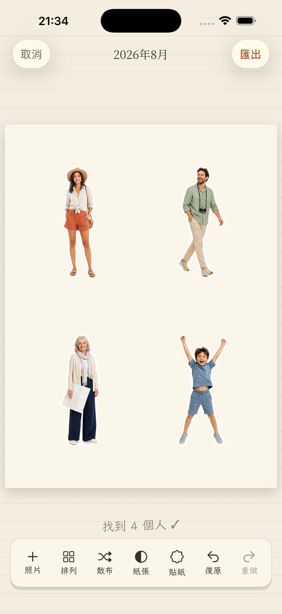
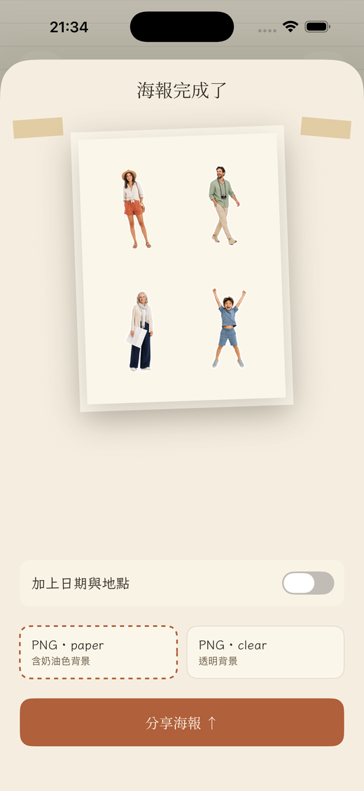
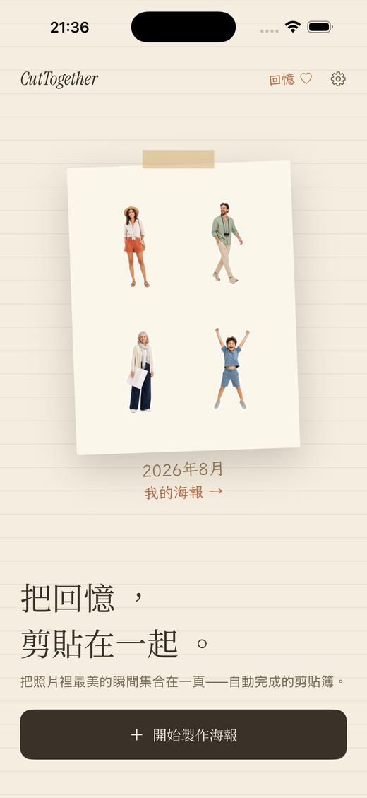

裝置端剪貼簿海報
照片 400 張。
留下的是人。
從你挑的照片中找出每個人，像貼紙一樣剪下來，排進同一張剪貼簿海報。剪裁自動完成，旅行還是你的。
即將上架App StoreiPHONE ＆ iPAD · 免帳號 · 照片不會離開手機
自動去背
模切貼紙外框
紙膠帶
PNG 匯出


2026年8月
使用方式
從相機膠卷到一頁，只要三步。
挑選
最多 20 張照片
直接從照片選擇器挑。不用建相簿，也不用加標籤。
剪裁
每個人都被剪下來
Apple Vision 框架在裝置上找出人物，把他們從背景抬起來。一張照片有多人也各自處理。
排版
海報自己完成
貼紙一張張落在紙上。移動、縮放、旋轉或散布，滿意後匯出 PNG。
畫面
這不是修圖 App，而是一頁剪貼簿。



隱私
照片不會離開這台裝置。
沒有伺服器，不需登入，也沒有任何第三方 SDK。照片分析、去背與繪製全部在 iPhone 上完成，而 App 能看到的只有你在系統選擇器裡交給它的照片。
細節
小巧的 App。刻意的選擇。
照片不會離開你的 iPhone
人物偵測與去背都在裝置上完成。不上傳、不需帳號、沒有分析工具。
模切貼紙外框
白色、奶油色、墨色或陶土色的外框，也可以完全不加。
四種紙張
白色、奶油色、墨色與牛皮紙，還有可以貼到任何地方的透明背景匯出。
日期來自照片
手寫風說明文字的日期，直接讀自照片的拍攝資訊。
海報收藏庫
分享過的海報都會保存，隨時可以再分享或刪除。
四種語言
English、한국어、日本語、繁體中文 — 每種語言都有合適的標題與手寫字體。
留下人，而不是資料夾。
即將在 iPhone 與 iPad 上推出。
即將上架App Store